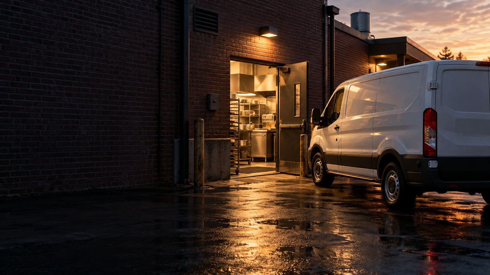

Commercial Kitchen Equipment Repair Service Areas: Memphis & Surrounding Cities
Serving Commercial Kitchens Throughout Memphis and the Mid-South
Providing top-tier preventative maintenance to keep your equipment running efficiently.
Schedule ServiceMemphis Service Areas
Downtown Memphis
Serving restaurants, hotels, and event venues in the heart of Memphis, including Beale Street, South Main, and the Medical District.
- Rapid response times
- Flexible scheduling for busy tourist areas
- Experience with historic buildings
Midtown Memphis
Supporting the diverse culinary scene in Cooper-Young, Overton Square, and surrounding neighborhoods.
- Local team familiar with the area
- Support for farm-to-table operations
- Weekend availability
East Memphis
Maintaining equipment for businesses along Poplar Avenue, White Station, and surrounding commercial districts.
- Corporate account management
- Multi-location service coordination
- Preventative maintenance programs
Germantown
Providing reliable maintenance services to upscale establishments in Germantown's dining districts.
- High-end equipment specialists
- Discreet service delivery
- Strict compliance with local regulations
Collierville
Supporting restaurants and food service businesses in Collierville's historic square and commercial corridors.
- Punctual, professional service
- Early morning appointments available
- Comprehensive maintenance packages
Bartlett
Helping food service businesses throughout Bartlett maintain operational excellence with regular maintenance.
- Customized service schedules
- Detailed equipment reports
- Emergency availability
Cordova
Keeping commercial kitchens in Cordova's growing restaurant scene running efficiently.
- New establishment setup support
- Seasonal maintenance planning
- Energy efficiency consultation
Arlington
Restaurant equipment maintenance for commercial kitchens and food-service businesses throughout Arlington.
- Measured hot-side and cold-side diagnostics
- Preventative maintenance planning
- Same-day appointments when available
Lakeland
Commercial kitchen equipment service for restaurants and food-service businesses throughout Lakeland.
- Commercial equipment diagnostics
- Preventative maintenance planning
- Same-day appointments when available
Southaven
Commercial kitchen equipment repair for restaurants and food-service businesses throughout Southaven.
- Hot-side and cold-side diagnostics
- Preventative maintenance options
- Same-day appointments when available
Olive Branch
Commercial appliance repair for restaurants and food-service businesses throughout Olive Branch.
- Equipment-specific fault diagnostics
- Hot-side and cold-side service
- Same-day appointments when available
West Memphis
Commercial kitchen repair for restaurants and food-service businesses throughout West Memphis, Arkansas.
- Fault-specific equipment diagnostics
- Hot-side and cold-side service
- Same-day appointments when available
Mississippi Areas
Extending our services to other nearby North Mississippi communities.
- Cross-state service coordination
- Familiarity with MS regulations
- Consistent service quality
Our Memphis Service Radius
Based in Memphis, we provide service throughout a 50-mile radius covering the entire metro area and beyond. Our strategically located team ensures prompt response times no matter where your business is located.
For immediate service in any Memphis area location, contact us today:
Memphis-Owned, Memphis-Operated
As a Memphis-based business, we understand the unique challenges faced by commercial kitchens in our city. From the humidity of Mid-South summers to the specific requirements of local health departments, our team brings specialized knowledge that national service companies simply can't match.
Our technicians aren't just passing through—they live and work in the Memphis area, allowing us to provide faster response times and more personalized service than the competition. When you work with Rapid Pro Maintenance, you're supporting a local business that reinvests in the Memphis economy.
EPA Universal Certified
Licensed Refrigerant Handling
R290 Approved
Natural Refrigerant Specialist
Locally Owned & Operated
Serving Greater Memphis
Ready for Reliable Memphis Service?
Join the growing number of Memphis restaurants and food service businesses that trust Rapid Pro Maintenance for their equipment upkeep.